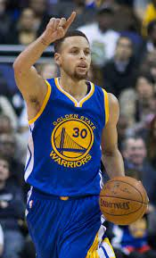
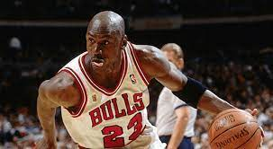
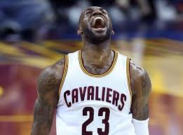
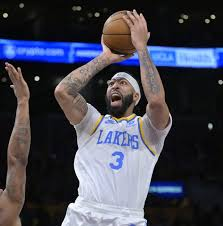
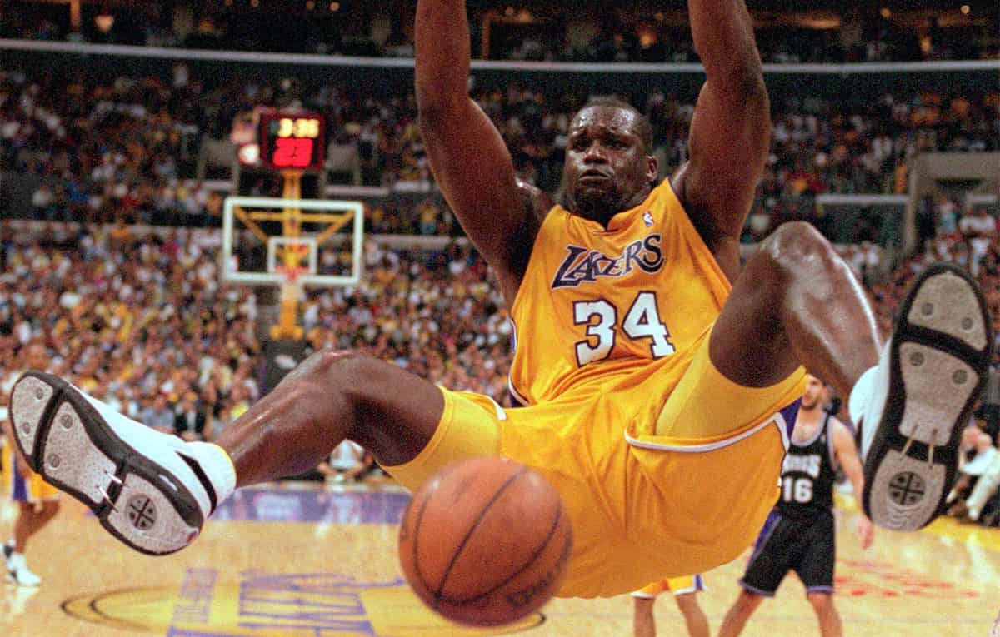

Las posiciones de juego en el baloncesto, se dividen principalmente en dos grupos: interiores y exteriores. Se llama juego interior a aquel que se desarrolla desde espacios muy próximos al aro, hasta espacios situados a una distancia de 4 o 5 metros aproximadamente. En cambio, el juego exterior es aquel que se genera en espacios lejanos, más allá de la línea de 6,75 metros.
BASE (Point Guard, Playmaker)
Es el encargado de dirigir el juego. Generalmente, sube el balón de una pista a otra para ponerlo en juego lo antes posible. Su función es organizar, dirigir, controlar el ritmo del partido, en función de la situación de juego, etc. En definitiva, es la voz del entrenador dentro de la cancha, su mano derecha. Suelen ser de menor estatura que el resto de jugadores. Su zona habitual de juego es el área central del perímetro. También se le identifica como jugador que juega en la posición de “1”.
Un buen base debe cumplir con una serie de características:

ESCOLTA (Alero Bajo, Shooting Guard)

Es una posición intermedia entre base y alero. Hay escoltas, que pueden desempeñar las tres funciones exteriores (base-escolta-alero), sin ningún problema. Generalmente, es un poco más corpulento que el base y en numerosas ocasiones lleva a cabo su labor. Se le conoce como jugador que juega en el puesto de “2”. Las características de un buen escolta son las mismas que las de un buen base, añadiendo que suelen ser más anotadores. Su área de juego se sitúa fuera de la línea de 6,75 metros.
ALERO (Alero Alto, Small Forward)

Suele ser el jugador exterior más corpulento. Es rápido, aunque no tanto como el base y el escolta. Su área habitual de juego es abierto en el perímetro, aunque en situaciones concretas, pueden jugar desde posiciones interiores. Se le conoce como jugador que juega de “3”. Las características principales de un buen alero son:ALA-PIVOT (Power Forward)

Es de los jugadores más corpulentos del equipo, aunque no tanto como el pivot. Son mucho más ágiles y coordinados con respecto al baloncesto de años atrás. Suelen jugar desde espacios interiores de media distancia o distancias muy cercanas. Cuando lo hacen cerca del aro, lo suelen hacer de espaldas. Desde 4 o 5 metros, tienen buenos porcentajes de tiro y buena capacidad de jugar uno contra uno, en penetración. Si son buenos pasadores, especialmente desde el poste alto o tiro libre, pueden ser letales en el juego. Son rápidos para correr el contraataque. Una de sus funciones más importantes es la de rebotear en ataque y en defensa. Se le conoce como jugador que juega de “4”.PIVOT (Center)

Es el más grande y corpulento del equipo. En esta posición, el peso y la fuerza cobran gran importancia. Es fundamental que domine el uso del cuerpo para ganar espacios. Disponer de un pivot dominante, abre un sinfín de posibilidades tácticas en el equipo. Tiene buenos movimientos jugando de espaldas al defensor. Su área de juego suele ser cercana al aro, aunque en el baloncesto moderno, cada vez tienen mejores habilidades, para salir fuera del perímetro a tirar. Para los equipos puede ser muy ventajoso sacar al perímetro a los jugadores grandes, principalmente, por el espacio libre que dejan cerca del aro. Se le conocen como jugadores que juegan en el puesto “5”.